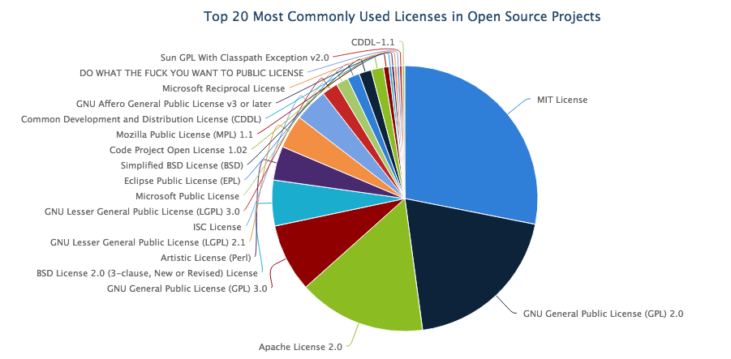

free & open-source software:
The philosophy
Kick-off HotMaps
Wien, 13-14 October 2016
Created by Pietro Zambelli (EURAC)
The origins of free software
Richard Stallman launched the free software movement & pioneered the concept of copyleft

History
1971 Stallman was working at the MIT Artificial Intelligence Lab
=> the code of the OS was public and shared
1980s The situation changed drastically
=> None of the OS were free software any more
=> It was required to sign a nondisclosure agreement even to get an executable copy
☹
Power
Users => Companies
Why?
If the users don't control the program
=> the program controls the users
With proprietary software, the program is controlled by the developer or “owner”.
They can exercises power over their users
Power corrupts
Therefore proprietary program's developer is tempted to design the program to mistreat its users
Nowadays mistreat users is standard practice
- Back doors
- Censorship
- Deception
- Insecurity
- Sabotage
- Interference
- Surveillance
- Subscriptions
- Tethers to servers
- Digital restrictions management or “DRM” means functionalities designed to restrict what users can do with the data in their computers.
- Jails—systems that impose censorship on application programs.
- Tyrants—systems that reject any operating system not “authorized” by the manufacturer.
How to protect users?
©
Using the copyright!
Free as in freedom
A program is free software, for you, a particular user,
if you have the freedom to:
- run the program as you wish, for any purpose.
- modify the program to suit your needs (you must have access to the source code).
- redistribute copies, either gratis or for a fee.
- distribute modified versions of the program, so that the community can benefit from your improvements.
License inheritance
©
“Copyleft (a play on the word copyright) is the practice of offering people the right to freely distribute copies and modified versions of a work with the stipulation that the same rights be preserved in derivative works down the line.”
The origins of open-source

Raymond central thesis is what he called Linus' Law
“The more widely available the source code is for public testing, scrutiny, and experimentation, the more rapidly all forms of bugs will be discovered.”
The origins of open-source
“The open source label was created at a strategy session held on February, 1998 […] shortly after the announcement of the release of the Netscape source code. The strategy session grew from a realization that the attention around the Netscape announcement had created an opportunity to educate and advocate for the superiority of an open development process.”
The origins of open-source
“The conferees believed the pragmatic, business-case grounds that had motivated Netscape to release their code illustrated a valuable way to engage with potential software users and developers, and convince them to create and improve source code by participating in an engaged community.”
The origins of open source
“The conferees also believed that it would be useful to have a single label that identified this approach and distinguished it from the philosophically- and politically-focused label free software.”
The Open Source Initiative (OSI)
“The Open Source Initiative (OSI) is a California public benefit corporation that is actively involved in Open Source community-building, education, and public advocacy to
promote awareness and the importance of non-proprietary software”
The Open Source Definition (OSD)
- Free Redistribution
- Source Code
- Derived Works
- Integrity of The Author's Source Code
- No Discrimination Against Persons or Groups
- No Discrimination Against Fields of Endeavor
- Distribution of License
- License Must Not Be Specific to a Product
- License Must Not Restrict Other Software
- License Must Be Technology-Neutral
1. Free Redistribution
“The license shall not restrict any party from selling or giving away the software as a component of an aggregate software distribution containing programs from several different sources. The license shall not require a royalty or other fee for such sale.”
2. Source Code
“The program must include source code, and must allow distribution in source code as well as compiled form. […] Deliberately obfuscated source code is not allowed. Intermediate forms such as the output of a preprocessor or translator are not allowed.”
3. Derived Works
“The license must allow modifications and derived works, and must allow them to be distributed under the same terms as the license of the original software.”
Rationale: The mere ability to read source isn't enough to support independent peer review and rapid evolutionary selection. For rapid evolution to happen, people need to be able to experiment with and redistribute modifications.
4. Integrity of The Author's Source Code
“The license may restrict source-code from being distributed in modified form only if the license allows the distribution of "patch files" with the source code for the purpose of modifying the program at build time.”
Rationale: Encouraging lots of improvement is a good thing, but users have a right to know who is responsible for the software they are using. Authors and maintainers have reciprocal right to know what they're being asked to support and protect their reputations.
5. No Discrimination Against Persons or Groups
“The license must not discriminate against any person or group of persons.”
Rationale: In order to get the maximum benefit from the process, the maximum diversity of persons and groups should be equally eligible to contribute to open sources. Therefore we forbid any open-source license from locking anybody out of the process.
6. No Discrimination Against Fields of Endeavor
“The license must not restrict anyone from making use of the program in a specific field of endeavor.”
Rationale: The major intention of this clause is to prohibit license traps that prevent open source from being used commercially. We want commercial users to join our community, not feel excluded from it.
7. Distribution of License
“The rights attached to the program must apply to all to whom the program is redistributed without the need for execution of an additional license by those parties.”
Rationale: This clause is intended to forbid closing up software by indirect means such as requiring a non-disclosure agreement.
8. License Must Not Be Specific to a Product
“The rights attached to the program must not depend on the program's being part of a particular software distribution.”
Rationale: This clause forecloses yet another class of license traps.
9. License Must Not Restrict Other Software
“The license must not place restrictions on other software that is distributed along with the licensed software. For example, the license must not insist that all other programs distributed on the same medium must be open-source software.”
Rationale: Distributors of open-source software have the right to make their own choices about their own software.
10. License Must Be Technology-Neutral
“No provision of the license may be predicated on any individual technology or style of interface.”
Rationale: This provision is aimed specifically at licenses which require an explicit gesture of assent in order to establish a contract between licensor and licensee. Provisions mandating so-called "click-wrap" may conflict with important methods of software distribution such as FTP download, CD-ROM anthologies, and web mirroring; such provisions may also hinder code re-use. Conformant licenses must allow for the possibility that (a) redistribution of the software will take place over non-Web channels that do not support click-wrapping of the download, and that (b) the covered code (or re-used portions of covered code) may run in a non-GUI environment that cannot support popup dialogues.
Open Source is the engine of innovation
“THE FOUNDATION for nearly all applications, operating systems, cloud computing, databases, big data and more”
Read more
Open Source is the engine of innovation
- Faster, more agile development
- Accelerated time to market
- Vastly superior interoperability
Open Source is the engine of innovation
“Great diversity of business models”
License Proliferation
58 different licenses are recognise as open source license by the Open Source Initiative
Report of License Proliferation Committee by OSIChoose an open source license
choose a licenseWikipedia have a detailed open source licenses comparison
Think about your Business model
Wikipedia: Business models for open-source software